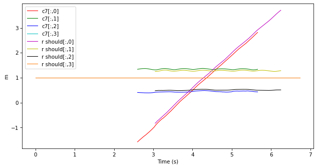
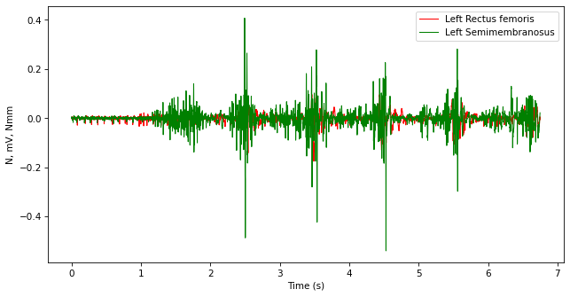
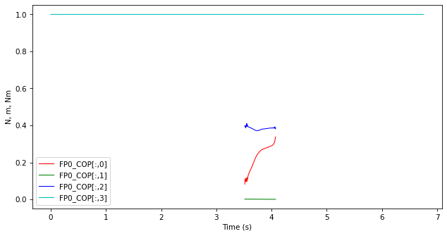

8.1. Reading C3D files#
Let’s first download a sample C3D file:
import kineticstoolkit.lab as ktk
filename = ktk.doc.download("c3d_sample.c3d")
We read it using ktk.read_c3d:
c3d_contents = ktk.read_c3d(filename)
c3d_contents
UserWarning [/Users/felix/Documents/git/kineticstoolkit_doc/src/kineticstoolkit/files.py:555] In the specified file, points are expressed in mm. They have been automatically converted to meters (scaled by 0.001). Please note that if this file also contains calculated values such as angles, powers, etc., they have been also (wrongly) scaled by 0.001. Consult https://kineticstoolkit.uqam.ca/doc/api/ktk.read_c3d.html for more information. You can mute this warning by explicitely setting `convert_point_unit` to either True or False.
{
'Points': TimeSeries with attributes: time: <array of shape (675...
'Analogs': TimeSeries with attributes: time: array([0. , 0.001, 0...
'ForcePlatforms': TimeSeries with attributes: time: array([0. , 0.001, 0...
'C3DParameters': <dict with 7 entries>
}
Caution
As indicated in the warning above, the points in this file are expressed in millimetres; however, Kinetics Toolkit uses SI units and therefore metres by default. The point positions have been converted to metres by default, and therefore you can ignore this warning, or suppress it altogether using:
c3d_contents = ktk.read_c3d(filename, convert_point_unit=True)
You can generally ignore this warning if you read unprocessed marker positions and analog signals.
You should not ignore this warning if you are reading a C3D file that has been processed by some software or pipeline to calculate joint kinetics, powers, etc., and if these values are expressed as “points” in the C3D. Consult the help of ktk.read_c3d for more details.
The content of the file is expressed as a dictionary with two keys:
Points: A TimeSeries that contains the point data (markers)Analogs(only when applicable): A TimeSeries that contains the raw analog data from force platforms, EMG, or other analog signals recorded into the C3D file.ForcePlatforms(only when applicable): A TimeSeries that contains the forces, moments, centres of pressure, and force platform positions.
8.1.1. Points#
Each data key of the Points TimeSeries corresponds to one point (marker):
c3d_contents["Points"].data
{
'c7': <array of shape (675, 4)>
'r should': <array of shape (675, 4)>
'l should': <array of shape (675, 4)>
'sacrum': <array of shape (675, 4)>
'r asis': <array of shape (675, 4)>
'r bar 1': <array of shape (675, 4)>
'r knee 1': <array of shape (675, 4)>
'RATT': <array of shape (675, 4)>
'SCR1': <array of shape (675, 4)>
'SCR2': <array of shape (675, 4)>
'r bar 2': <array of shape (675, 4)>
'r heel': <array of shape (675, 4)>
'r met': <array of shape (675, 4)>
'l asis': <array of shape (675, 4)>
'l bar 1': <array of shape (675, 4)>
'l knee 1': <array of shape (675, 4)>
'LATT': <array of shape (675, 4)>
'SCL1': <array of shape (675, 4)>
'SCL2': <array of shape (675, 4)>
'l bar 2': <array of shape (675, 4)>
'l heel': <array of shape (675, 4)>
'l met': <array of shape (675, 4)>
}
We will learn how to visualize these markers using an interactive player in Visualizing 3D points, frames, and forces. For now, let’s plot some of them:
c3d_contents["Points"].plot(["c7", "r should"])

8.1.2. Analogs#
Each data key of the Analogs TimeSeries corresponds to one analog signal:
c3d_contents["Analogs"].data
{
'Fx1': <array of shape (6750,)>
'Fy1': <array of shape (6750,)>
'Fz1': <array of shape (6750,)>
'Mx1': <array of shape (6750,)>
'My1': <array of shape (6750,)>
'Mz1': <array of shape (6750,)>
'Fx2': <array of shape (6750,)>
'Fy2': <array of shape (6750,)>
'Fz2': <array of shape (6750,)>
'Mx2': <array of shape (6750,)>
'My2': <array of shape (6750,)>
'Mz2': <array of shape (6750,)>
'Fx3': <array of shape (6750,)>
'Fy3': <array of shape (6750,)>
'Fz3': <array of shape (6750,)>
'Mx3': <array of shape (6750,)>
'My3': <array of shape (6750,)>
'Mz3': <array of shape (6750,)>
'Fx4': <array of shape (6750,)>
'Fy4': <array of shape (6750,)>
'Fz4': <array of shape (6750,)>
'Mx4': <array of shape (6750,)>
'My4': <array of shape (6750,)>
'Mz4': <array of shape (6750,)>
'Fx5': <array of shape (6750,)>
'Fy5': <array of shape (6750,)>
'Fz5': <array of shape (6750,)>
'Mx5': <array of shape (6750,)>
'My5': <array of shape (6750,)>
'Mz5': <array of shape (6750,)>
'Fx6': <array of shape (6750,)>
'Fy6': <array of shape (6750,)>
'Fz6': <array of shape (6750,)>
'Mx6': <array of shape (6750,)>
'My6': <array of shape (6750,)>
'Mz6': <array of shape (6750,)>
'Left Rectus femoris': <array of shape (6750,)>
'Right Rectus femoris': <array of shape (6750,)>
'Left Semimembranosus': <array of shape (6750,)>
'Right Semimembranosus': <array of shape (6750,)>
'Left Tibialis anterior': <array of shape (6750,)>
'Right Tibialis anterior': <array of shape (6750,)>
'Left Gastrocnemius medialis': <array of shape (6750,)>
'Right Gastrocnemius medialis': <array of shape (6750,)>
}
Let’s plot some of them:
c3d_contents["Analogs"].plot(["Left Rectus femoris", "Left Semimembranosus"])

8.1.3. Force platforms#
The ForcePlatforms TimeSeries contains information regarding all force platforms in the file. In this particular file, there are 6 force platforms, represented as FP0 to FP5:
The position of the force platforms is given by
FPx_Corner1toFPx_Corner4.Their local coordinate systems are given by the
FPx_LCStransform series.Ground reaction forces are given by
Forces.Moments are reported both around the force platform geometrical centre (
FPx_MomentAtCentre) and at the point of pressure (FPx_MomentAtCOP).The centre of pressure is reported in
FPx_COP.
c3d_contents["ForcePlatforms"].data
{
'FP0_Corner1': <array of shape (6750, 4)>
'FP0_Corner2': <array of shape (6750, 4)>
'FP0_Corner3': <array of shape (6750, 4)>
'FP0_Corner4': <array of shape (6750, 4)>
'FP0_LCS': <array of shape (6750, 4, 4)>
'FP0_Force': <array of shape (6750, 4)>
'FP0_MomentAtCenter': <array of shape (6750, 4)>
'FP0_COP': <array of shape (6750, 4)>
'FP0_MomentAtCOP': <array of shape (6750, 4)>
'FP1_Corner1': <array of shape (6750, 4)>
'FP1_Corner2': <array of shape (6750, 4)>
'FP1_Corner3': <array of shape (6750, 4)>
'FP1_Corner4': <array of shape (6750, 4)>
'FP1_LCS': <array of shape (6750, 4, 4)>
'FP1_Force': <array of shape (6750, 4)>
'FP1_MomentAtCenter': <array of shape (6750, 4)>
'FP1_COP': <array of shape (6750, 4)>
'FP1_MomentAtCOP': <array of shape (6750, 4)>
'FP2_Corner1': <array of shape (6750, 4)>
'FP2_Corner2': <array of shape (6750, 4)>
'FP2_Corner3': <array of shape (6750, 4)>
'FP2_Corner4': <array of shape (6750, 4)>
'FP2_LCS': <array of shape (6750, 4, 4)>
'FP2_Force': <array of shape (6750, 4)>
'FP2_MomentAtCenter': <array of shape (6750, 4)>
'FP2_COP': <array of shape (6750, 4)>
'FP2_MomentAtCOP': <array of shape (6750, 4)>
'FP3_Corner1': <array of shape (6750, 4)>
'FP3_Corner2': <array of shape (6750, 4)>
'FP3_Corner3': <array of shape (6750, 4)>
'FP3_Corner4': <array of shape (6750, 4)>
'FP3_LCS': <array of shape (6750, 4, 4)>
'FP3_Force': <array of shape (6750, 4)>
'FP3_MomentAtCenter': <array of shape (6750, 4)>
'FP3_COP': <array of shape (6750, 4)>
'FP3_MomentAtCOP': <array of shape (6750, 4)>
'FP4_Corner1': <array of shape (6750, 4)>
'FP4_Corner2': <array of shape (6750, 4)>
'FP4_Corner3': <array of shape (6750, 4)>
'FP4_Corner4': <array of shape (6750, 4)>
'FP4_LCS': <array of shape (6750, 4, 4)>
'FP4_Force': <array of shape (6750, 4)>
'FP4_MomentAtCenter': <array of shape (6750, 4)>
'FP4_COP': <array of shape (6750, 4)>
'FP4_MomentAtCOP': <array of shape (6750, 4)>
'FP5_Corner1': <array of shape (6750, 4)>
'FP5_Corner2': <array of shape (6750, 4)>
'FP5_Corner3': <array of shape (6750, 4)>
'FP5_Corner4': <array of shape (6750, 4)>
'FP5_LCS': <array of shape (6750, 4, 4)>
'FP5_Force': <array of shape (6750, 4)>
'FP5_MomentAtCenter': <array of shape (6750, 4)>
'FP5_COP': <array of shape (6750, 4)>
'FP5_MomentAtCOP': <array of shape (6750, 4)>
}
Let’s plot the COP on force plates 0:
c3d_contents["ForcePlatforms"].plot('FP0_COP')

8.1.4. Quick visualization#
Although visualizing data using the interactive 3D Player is explained in section Visualizing 3D points, frames, and forces, here is how we can quickly visualize the kinematic and kinetic data in this file. Note that every TimeSeries provided to the Player must have the same sampling rate, which means we need to downsample the force platform data to the points sampling rate:
ktk.Player(
c3d_contents["Points"],
c3d_contents["ForcePlatforms"].resample(c3d_contents["Points"].time)
)
---------------------------------------------------------------------------
ImportError Traceback (most recent call last)
Cell In[10], line 1
----> 1 get_ipython().run_line_magic('matplotlib', 'qt5')
3 points = c3d_contents["Points"].get_ts_between_times(3, 5)
4 ktk.Player(
5 points,
6 c3d_contents["ForcePlatforms"].resample(points.time)
7 )._to_animation()
File /opt/miniconda3/envs/mosa/lib/python3.12/site-packages/IPython/core/interactiveshell.py:2511, in InteractiveShell.run_line_magic(self, magic_name, line, _stack_depth)
2509 kwargs['local_ns'] = self.get_local_scope(stack_depth)
2510 with self.builtin_trap:
-> 2511 result = fn(*args, **kwargs)
2513 # The code below prevents the output from being displayed
2514 # when using magics with decorator @output_can_be_silenced
2515 # when the last Python token in the expression is a ';'.
2516 if getattr(fn, magic.MAGIC_OUTPUT_CAN_BE_SILENCED, False):
File /opt/miniconda3/envs/mosa/lib/python3.12/site-packages/IPython/core/magics/pylab.py:103, in PylabMagics.matplotlib(self, line)
98 print(
99 "Available matplotlib backends: %s"
100 % _list_matplotlib_backends_and_gui_loops()
101 )
102 else:
--> 103 gui, backend = self.shell.enable_matplotlib(args.gui)
104 self._show_matplotlib_backend(args.gui, backend)
File /opt/miniconda3/envs/mosa/lib/python3.12/site-packages/IPython/core/interactiveshell.py:3801, in InteractiveShell.enable_matplotlib(self, gui)
3797 print('Warning: Cannot change to a different GUI toolkit: %s.'
3798 ' Using %s instead.' % (gui, self.pylab_gui_select))
3799 gui, backend = pt.find_gui_and_backend(self.pylab_gui_select)
-> 3801 pt.activate_matplotlib(backend)
3803 from matplotlib_inline.backend_inline import configure_inline_support
3805 configure_inline_support(self, backend)
File /opt/miniconda3/envs/mosa/lib/python3.12/site-packages/IPython/core/pylabtools.py:409, in activate_matplotlib(backend)
404 # Due to circular imports, pyplot may be only partially initialised
405 # when this function runs.
406 # So avoid needing matplotlib attribute-lookup to access pyplot.
407 from matplotlib import pyplot as plt
--> 409 plt.switch_backend(backend)
411 plt.show._needmain = False
412 # We need to detect at runtime whether show() is called by the user.
413 # For this, we wrap it into a decorator which adds a 'called' flag.
File /opt/miniconda3/envs/mosa/lib/python3.12/site-packages/matplotlib/pyplot.py:424, in switch_backend(newbackend)
421 return
422 old_backend = rcParams._get('backend') # get without triggering backend resolution
--> 424 module = backend_registry.load_backend_module(newbackend)
425 canvas_class = module.FigureCanvas
427 required_framework = canvas_class.required_interactive_framework
File /opt/miniconda3/envs/mosa/lib/python3.12/site-packages/matplotlib/backends/registry.py:317, in BackendRegistry.load_backend_module(self, backend)
303 """
304 Load and return the module containing the specified backend.
305
(...) 314 Module containing backend.
315 """
316 module_name = self._backend_module_name(backend)
--> 317 return importlib.import_module(module_name)
File /opt/miniconda3/envs/mosa/lib/python3.12/importlib/__init__.py:90, in import_module(name, package)
88 break
89 level += 1
---> 90 return _bootstrap._gcd_import(name[level:], package, level)
File <frozen importlib._bootstrap>:1387, in _gcd_import(name, package, level)
File <frozen importlib._bootstrap>:1360, in _find_and_load(name, import_)
File <frozen importlib._bootstrap>:1331, in _find_and_load_unlocked(name, import_)
File <frozen importlib._bootstrap>:935, in _load_unlocked(spec)
File <frozen importlib._bootstrap_external>:999, in exec_module(self, module)
File <frozen importlib._bootstrap>:488, in _call_with_frames_removed(f, *args, **kwds)
File /opt/miniconda3/envs/mosa/lib/python3.12/site-packages/matplotlib/backends/backend_qt5agg.py:7
4 from .. import backends
6 backends._QT_FORCE_QT5_BINDING = True
----> 7 from .backend_qtagg import ( # noqa: F401, E402 # pylint: disable=W0611
8 _BackendQTAgg, FigureCanvasQTAgg, FigureManagerQT, NavigationToolbar2QT,
9 FigureCanvasAgg, FigureCanvasQT)
12 @_BackendQTAgg.export
13 class _BackendQT5Agg(_BackendQTAgg):
14 pass
File /opt/miniconda3/envs/mosa/lib/python3.12/site-packages/matplotlib/backends/backend_qtagg.py:9
5 import ctypes
7 from matplotlib.transforms import Bbox
----> 9 from .qt_compat import QT_API, QtCore, QtGui
10 from .backend_agg import FigureCanvasAgg
11 from .backend_qt import _BackendQT, FigureCanvasQT
File /opt/miniconda3/envs/mosa/lib/python3.12/site-packages/matplotlib/backends/qt_compat.py:130
128 break
129 else:
--> 130 raise ImportError(
131 "Failed to import any of the following Qt binding modules: {}"
132 .format(", ".join([QT_API for _, QT_API in _candidates]))
133 )
134 else: # We should not get there.
135 raise AssertionError(f"Unexpected QT_API: {QT_API}")
ImportError: Failed to import any of the following Qt binding modules: PyQt5, PySide2